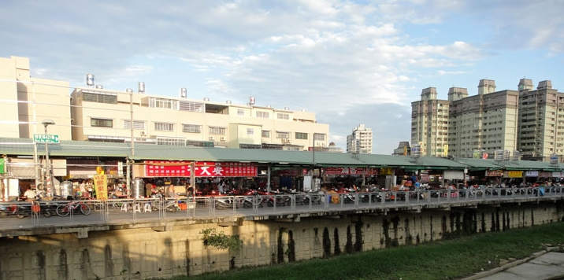

鳳山青年夜市是高雄市鳳山區的第一大夜市，最早是位在青年路旁所以稱為青年夜市，後因規模越來越大與地租關係，而現在搬遷至博愛路與瑞興路附近，每到夜市營業時間，總是會有大批人潮湧現，龐大的車潮與人潮常常使交通水洩不通，由此便可得知高雄鳳山青年夜市的熱鬧程度。
在鳳山青年夜市裡，每個攤販不管是吃的、喝的、用的、玩的總是排著長長的人龍等著購買消費，無論是臭豆腐、阿Q凍圓、蒙古烤肉、脆米雞、鮑魚海產粥、無骨香酥雞和地瓜球、海產粥、一口煎包、牛排、鐵板燒等任何想得到的美食應有盡有，滿足每位美食老饕的味蕾。
青年夜市中知名的無骨雞腳凍，除了招牌雞腳凍外也有滷味可選購
滷味種類繁多，能想到基本上都有，又滷得非常入味，完全不輸雞腳凍，
全部由老闆親手滷製的滷味，是老闆非常的自豪的成果，
在選購完滷味後可選擇要做成熱的或冷的滷味，非常建議選擇做成熱滷味，
因為那鍋滷汁非常好吃，最後再噴上一點香油和胡椒，變成一邊拎著一邊吃。
在青年夜市中總是大排長龍的小鮮鹹水雞，是青年夜市中的著名攤位，
在選購好要吃的食材後，雞肉的部分會由老闆俐落的去骨，再將其餘食材切成一塊一塊，
最後再灑上胡椒、蒜泥、蔥花，以及老闆精心調製的醬汁就大功告成，
鮮嫩的雞肉配上老闆用心的醬汁，難怪能成為青年夜市中總是大排長龍的店家。
來到青年夜市，絕對不能做錯的便是這家不一樣滷鴨血，
由中藥材所熬煮的滷味，所滷製的全部都是雞內臟，
再老闆的精心調製下，中藥味完美的融入了滷汁，並不會有突兀感，
此外還有店家所特製的辣椒醬，微微沾上一點更是妙不可言，
不黏口的米血軟綿入味，令人一口接著一口，
是每次來青年夜市必吃的一家。